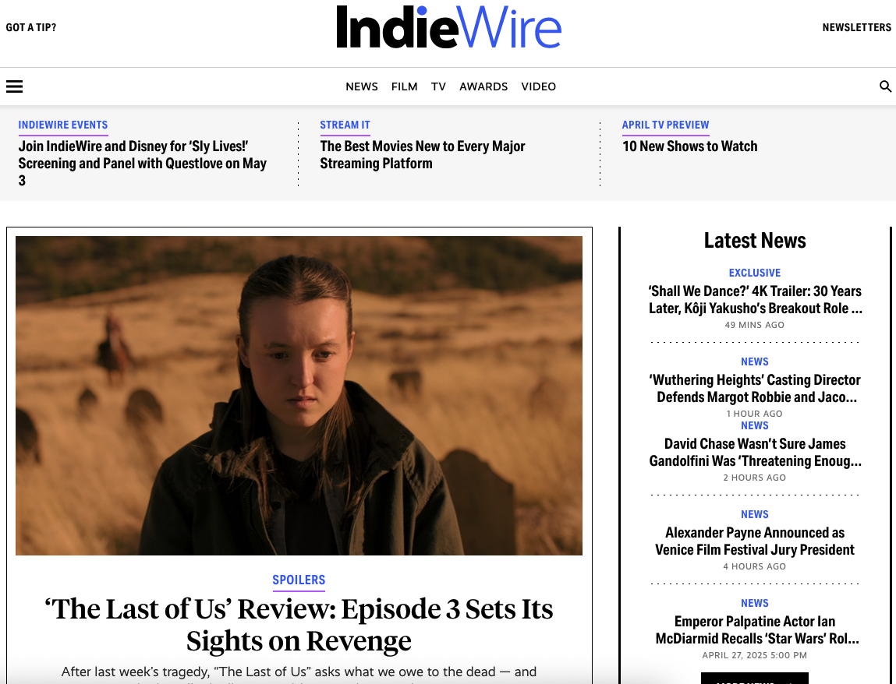

The Bottom Line - Deadline vs. Indiewire
Typography serves as a silent but powerful communicator of tone, professionalism, and urgency in online journalism. In the realm of entertainment journalism, two major players — Deadline and IndieWire, take notably different typographic approaches. Deadline presents itself with a bold, no-nonsense aesthetic. IndieWire, meanwhile, leans into a more approachable, editorial tone. These tones directly reflect the type of content they cover, in more ways than one.

Deadline typically uses strong, geometric sans-serif fonts for body text, paired with even bolder, all-caps headlines. Its typography mirrors the site's reputation for fast, breaking industry news: assertive, highly legible, and designed for quick consumption. This design echoes trade journal aesthetics, emphasizing breaking news and fast-paced developments within Hollywood. However, the article body text is usually compact, minimizing white space to allow for more information. This sometimes makes longer reading feel dense or fatiguing for the reader.
Indiewire, meanwhile, leans into a more approachable, editorial tone. Its typography feels lighter and more conversational. They use a modern sans-serif font for their body copy — something in the vein of Proxima Nova. Headlines are lighter compared to Deadline, often using mixed case rather than all caps. This creates a friendlier reading experience, reflecting IndieWire's cultural commentary focus rather than just hard news. The site's typographic rhythm supports longer reads and in-depth criticism, which aligns with its coverage of indie cinema, and festival reporting.

Indiewire also employs a slightly more colorful palette — subtle blues, grays, and occasional accent colors for bylines, categories, and links. This adds a layer of visual richness that Deadline simply lacks. It is true, however that sometimes Deadline will utilize a BREAKING banner in red, akin to a television news chyron. But the overall vibe and tone of Deadline can feel monotonous compared to the lighter Indiewire display.
While both Deadline and IndieWire serve entertainment news audiences, their typographic strategies diverge according to their brand identities. Deadline's typography is built for urgency, authority and density, while IndieWire's approach favors clarity, comfort, and an editorial feel. In a digital world where typography subtly shapes how we consume content; these differences are not just aesthetic — they are strategic reflections of each outlet's mission and audience expectations.